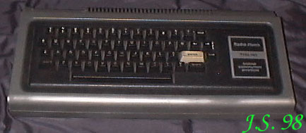

TRS 80 Procesor Z80 / 1,77MHz.RAM 16kB.ROM 12kB.Procesor graficzny - brak.Rozdzielczość maksymalna 128 X 48.Grafika monochromatyczna.Tekst 16 linii po 64 znaków i 16 linii po 32 znaki.Porty: drukarki, magnetofonu, Expansion Bus.Zewnętrzne peryferia: magnetofon, drukarka, stacja dysków 5,25".Dźwięk: brak (opcjonalnie można dołączyć syntezator przez Expansion Interface). |